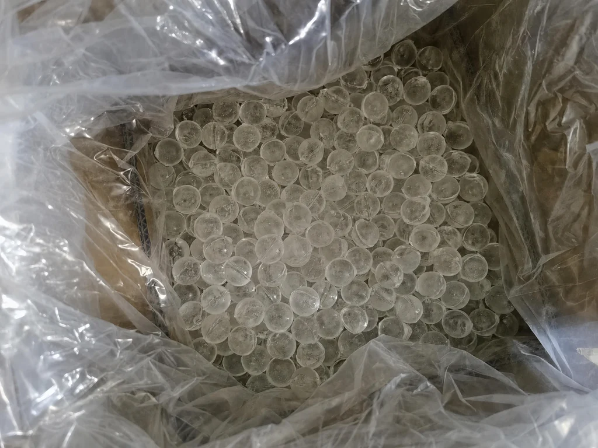
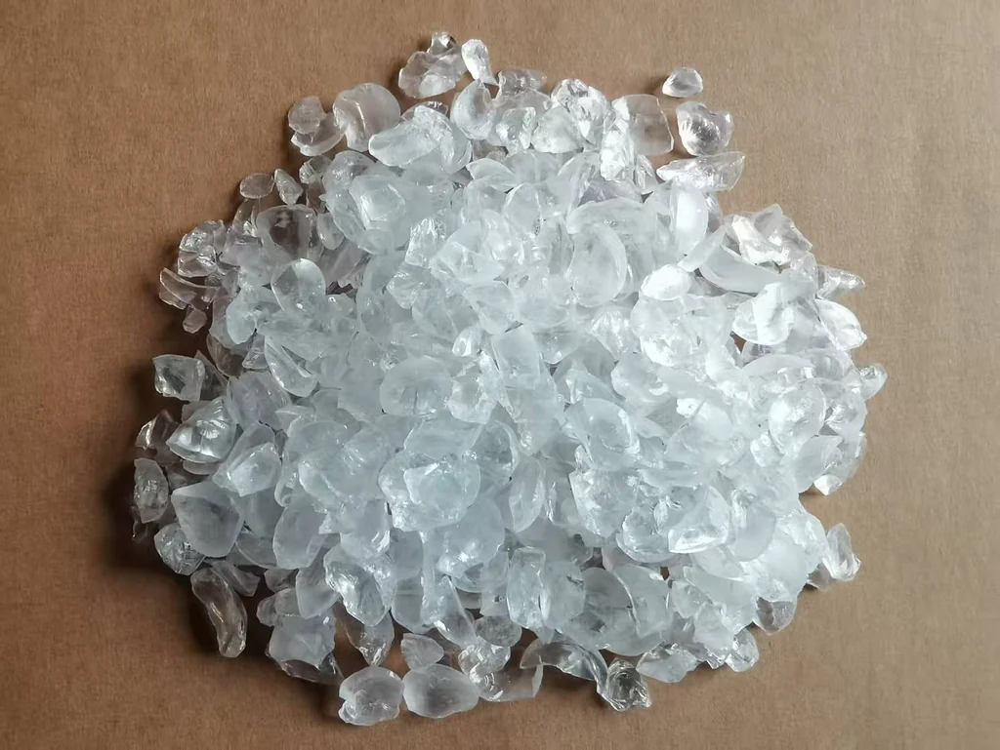
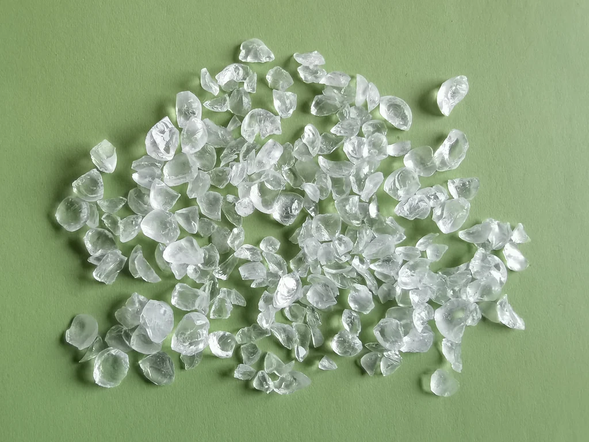
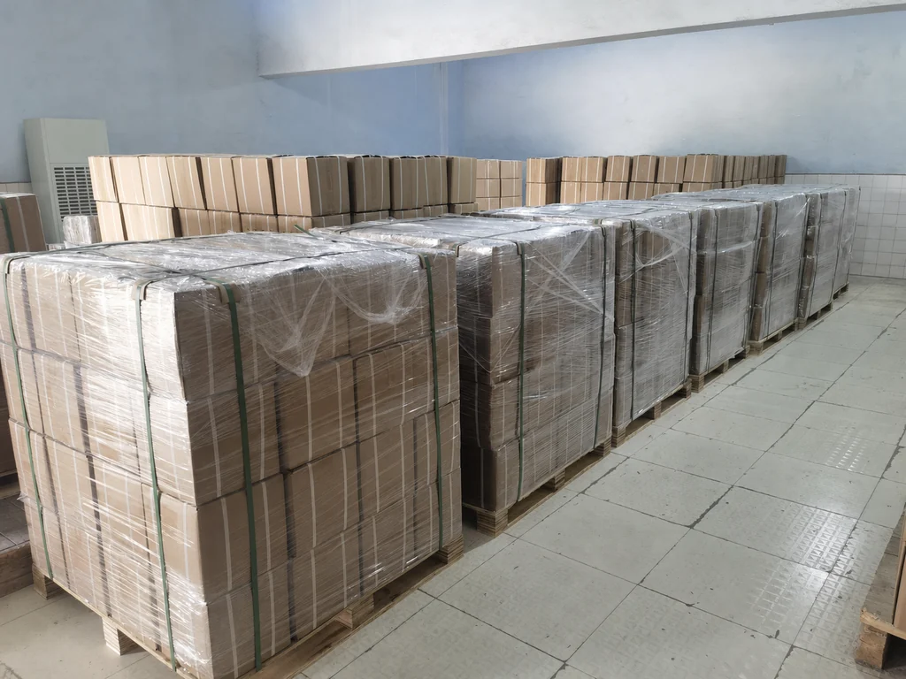
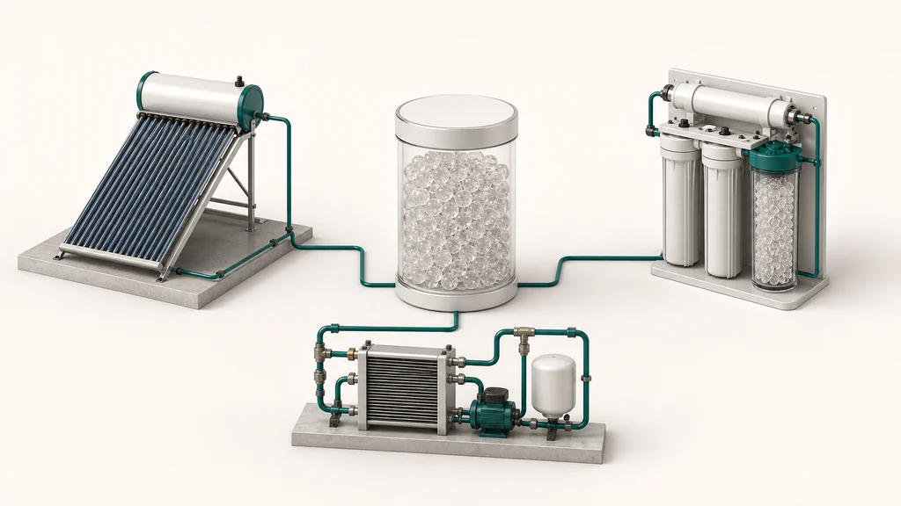
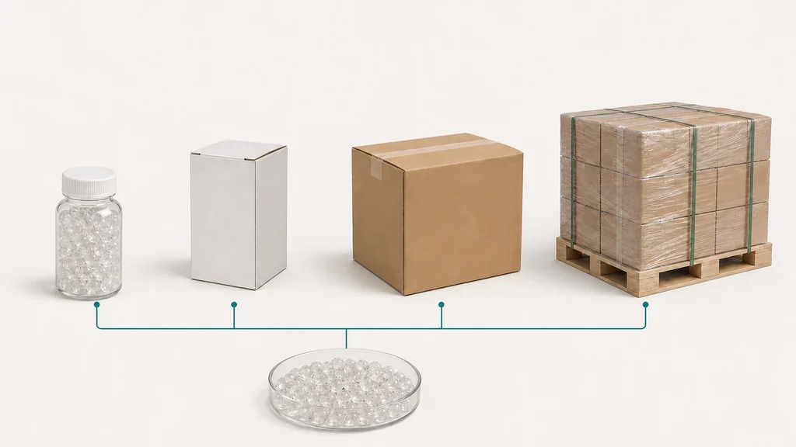

Siliphos balls
19 mm
Yuchen Water · OEM/ODM · विशेष फ़िल्टर माध्यम
Siliphos balls — विशेष फ़िल्टर माध्यम. पॉलीफॉस्फेट · Siliphos balls Ø19 mm, Ø10 mm, Ø3–8 mm; टूटे कण 6–12 mm / 4–10 mm; पाउडर. मूल्य प्रस्ताव मांगने से पहले जोड़ और परियोजना की आवश्यकताओं की पुष्टि करें।

01 · Siliphos balls · पॉलीफॉस्फेट
Siliphos balls — विशेष फ़िल्टर माध्यम. पॉलीफॉस्फेट · Siliphos balls Ø19 mm, Ø10 mm, Ø3–8 mm; टूटे कण 6–12 mm / 4–10 mm; पाउडर. मूल्य प्रस्ताव मांगने से पहले जोड़ और परियोजना की आवश्यकताओं की पुष्टि करें।



02 · Siliphos balls · टूटे कण · पाउडर
मूल्य प्रस्ताव मांगने से पहले जोड़ और परियोजना की आवश्यकताओं की पुष्टि करें।
03 · अनुप्रयोग · स्केल अवरोधक
अनुप्रयोग: सौर जल ताप · जल शोधन · उपकरण जल परिपथ. मूल्य प्रस्ताव मांगने से पहले जोड़ और परियोजना की आवश्यकताओं की पुष्टि करें।

मूल्य प्रस्ताव मांगने से पहले जोड़ और परियोजना की आवश्यकताओं की पुष्टि करें।
मूल्य प्रस्ताव मांगने से पहले जोड़ और परियोजना की आवश्यकताओं की पुष्टि करें।
मूल्य प्रस्ताव मांगने से पहले जोड़ और परियोजना की आवश्यकताओं की पुष्टि करें।
04 · तकनीकी चयन मार्गदर्शिका
मूल्य प्रस्ताव मांगने से पहले जोड़ और परियोजना की आवश्यकताओं की पुष्टि करें।
05 · OEM/ODM
OEM/ODM: लकड़ी का पैलेट · मास्टर कार्टन · छोटे डिब्बे · छोटी बोतलें. मूल्य प्रस्ताव मांगने से पहले जोड़ और परियोजना की आवश्यकताओं की पुष्टि करें।

06 · OEM/ODM · लकड़ी का पैलेट · मास्टर कार्टन
Yuchen Water · OEM/ODM · विशेष फ़िल्टर माध्यम. मूल्य प्रस्ताव मांगने से पहले जोड़ और परियोजना की आवश्यकताओं की पुष्टि करें।
Yuchen Water · OEM/ODM · विशेष फ़िल्टर माध्यम. मूल्य प्रस्ताव मांगने से पहले जोड़ और परियोजना की आवश्यकताओं की पुष्टि करें।
OEM/ODM: लकड़ी का पैलेट · मास्टर कार्टन · छोटे डिब्बे · छोटी बोतलें. मूल्य प्रस्ताव मांगने से पहले जोड़ और परियोजना की आवश्यकताओं की पुष्टि करें।
07 · FAQ
मूल्य प्रस्ताव मांगने से पहले जोड़ और परियोजना की आवश्यकताओं की पुष्टि करें।
Siliphos balls — विशेष फ़िल्टर माध्यम. पॉलीफॉस्फेट · Siliphos balls Ø19 mm, Ø10 mm, Ø3–8 mm; टूटे कण 6–12 mm / 4–10 mm; पाउडर. मूल्य प्रस्ताव मांगने से पहले जोड़ और परियोजना की आवश्यकताओं की पुष्टि करें।
H₂O · pH · TDS · Ca²⁺ · अनुप्रयोग · परियोजना अनुकूलन. मूल्य प्रस्ताव मांगने से पहले जोड़ और परियोजना की आवश्यकताओं की पुष्टि करें।
OEM/ODM: लकड़ी का पैलेट · मास्टर कार्टन · छोटे डिब्बे · छोटी बोतलें. मूल्य प्रस्ताव मांगने से पहले जोड़ और परियोजना की आवश्यकताओं की पुष्टि करें।